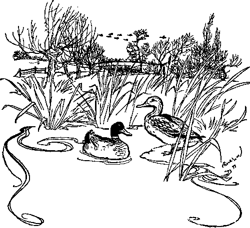

4. Black And Orange Spider. Part 3
Description
This section is from the book "Fly Fishing", by Sir Edward Grey. Also available from Amazon: Fly Fishing.
4. Black And Orange Spider. Part 3
After fifteen years' experience of single-handed split cane rods, I should without hesitation claim for mine that they have kept their straightness and lasted better than greenheart would have done under the same amount of work, and they have freed me entirely from the fear of a sudden break of the top joint in casting a line however long.
Years ago, when my wrist was young and weak, I found a difficulty in getting with one hand the full amount of work out of a ten foot six or eleven foot rod, which was powerful enough to throw a line against a strong wind, and I acquired as a boy the habit of fishing with the reel turned up and pressed against my arm above the wrist. This increases enormously the leverage which the arm has upon the rod, and I find that I can in this way fish easily with a rod, which it would be quite beyond my power to use single-handed in the ordinary way for any length of time. I am bound to confess that I have not succeeded in inducing my friends to adopt this method, but I am convinced that it enables me to do more work with less weariness of the arm than would otherwise be the case, and that its advantage on the days, when one has to contend with a strong down stream wind in dry fly fishing, is very great.
In all angling, but especially in dry fly angling, there is no greater misery than to be using a whippy rod. It never for a moment lets you forget its inefficiency: inaccurate even on still days, it seems to take a pleasure on rough days in watching the wind sweep away the line in the air, or blow it back. When you attempt to strike a fish, the silly top bends nearly to the water before it executes the strike, and when you have hooked a trout you are in despair at the rod's weakness and want of control. Take care, if a rod errs at all, that it does so on the side of stiffness.
So far this chapter has dealt only with the absolutely essential parts of an angler's equipment. There remain other things of which some are indispensable on certain occasions, but not always, while others are merely convenient. Landing nets and gaffs present little difficulty whenever the angler has an attendant; but one of the great charms of angling is the complete independence which an angler feels when fishing alone, and never is this enjoyed more than when it is possible in salmon fishing. Unfortunately the conditions of salmon fishing make the constant assistance or advice of an attendant often indispensable. It is so when a boat has to be used, when the angler does not know the river, or when he has a reasonable expectation of landing more fish than he can carry home. There is, however, no more exhilarating experience, than when an angler, relying entirely upon his own knowledge and judgment, has risen and hooked a salmon, and has to face the struggle alone without the possibility of assistance of any kind. For these occasions at any season of the year, when it is lawful, the angler who is alone should carry a gaff. Sir Herbert Maxwell describes in his book an arrangement for doing this, which I shall take the next opportunity of trying, for my experience hitherto has been that gaffs which are convenient to carry are not convenient to use, and those which are most effective in use are most awkward to carry. It takes longer to bring a salmon within reach of a gaff in one's own hand than it does to have it gaffed by an attendant; but if the hold of the hook is good the act of gaffing in ordinary water can be done as surely at last by the angler himself as by any one else, and the best way is that which is most easy and certain葉o gaff the fish over the back in the thickest part.
But in gaffing my practice is the reverse of that when using a landing net for trout. In the case of a fat lively trout on a small hook, the management of the rod seems to me up to the very end more difficult than the use of the net, and I therefore keep the rod in the cleverest hand葉he right hand in my case. I can receive a trout in the net and draw it to the bank as well with the left hand as with the right. With the gaff it is not so; and at the moment of gaffing the management of the gaff is, I consider, more difficult than that of the rod. My left hand cannot be trusted either to gaff or lift the salmon so surely as the other, and I therefore change the rod to the left hand as the critical moment approaches, and use the gaff with the right. One ought, however, to be doubly sure that the fish is exhausted before this change is made, and this is. one of the reasons why it takes longer to gaff one's own salmon than to have it done by an attendant.
In trout fishing I do not like a net which must hang by the middle of the handle. The net then hangs too low, and is more apt to catch in bushes, fences, brambles, or even under one's own feet when kneeling and crawling. There should be a hinge, not in the handle, but at the head of the loop of the net, which thus hangs by its head. In this case the handle must be short, but if a longer handle is desired, a telescopic one may be used, with a metal clip so arranged that the handle hangs upright, but telescoped, on the strap of the basket, with the net folded over at the head. This sort of net is easily detached, and the handle and net are both sent out straight in a moment with one movement of the hand.
The lightest and most comfortable form of waders for water meadows, or shallow water free from large stones or rocks, is that with long waterproof stockings coming well up on the thigh, and with indiarubber soled boots, the whole in one piece. These waders are not the most lasting, nor do they soon dry inside, but the convenience of being able to slip them on and off easily is very great. A heavier kind with more leather and nailed soles lasts longer. In salmon fishing, and in many trout rivers, wading trousers nearly up to the arm-pits, separate brogues and outside socks are needed. If one has to walk much from pool to pool they are a terrible discomfort. I hate the putting on of my wading trousers, the wearing of them, the walking in them, and the sight of them altogether, but I prefer them infinitely to fishing from a boat. They hamper one in every possible way, but they do not destroy one's independence.
As regards a fishing basket the only essential points are that it should be large enough and strong enough. Fishing baskets are made with all sorts of dodges, and every one can amuse himself by trying these, and may perhaps find some convenience in some of them. I have one basket which is fitted with so many dodges and straps, that though they were all explained to me once I have never been able to remember the use of all of them, and I sometimes spend idle moments on the bank trying to re-discover for myself the meaning of certain of the more mysterious straps: but the basket holds the fish very well. For a basket of any size it is very important to have a broad soft band across the shoulder, in order to guard against soreness and to diminish the aching and oppression caused at last by a heavy weight.
Spring balances (a small one for trout and a large one for salmon); boxes for flies (in the case of dry flies one in which the flies are kept loose in different compartments, and not fixed with their hackles pressed upon cork); a soft leather case for casts and gut lengths, with separate pockets; a knife with scissors, dull neutral-coloured clothes, and a soft hat, in which flies may be stuck when frequent changes are necessary, with a brim above which a cast can be wound葉hese complete my equipment for fly fishing.
Some innate conservatism lurking in me has prevented me hitherto from taking to the use of paraffin for dry flies. I do not defend myself, for I cannot prove that an oiled fly is less attractive to shy trout than a clean one; but I do not believe that容xcept on very wet days悠 should land any more trout by using paraffin, and I know that whenever a suspicious trout refused my fly I should be wondering whether the paraffin was the cause of it. Well-made dry-flies used to float very well before paraffin was adopted; they do so still; and I resent the intrusion of the odious little bottle and oil amongst my fishing tackle.
On the other hand, I am grateful for any preparation or any dressing which makes the reel line float upon the water. The sinking of the reel line is a great drawback in dry fly fishing. If the whole of the line which is cast upon the water continues to float upon the surface, the striking of a trout, or the lifting of the line and fly for the next cast, are made much easier, and the chance of the fly dragging is diminished. In wet fly fishing a reel line which will insist upon floating is a great nuisance, and the angler should have at least two lines ready for use, one for chalk streams and another for wet fly rivers.

Continue to: